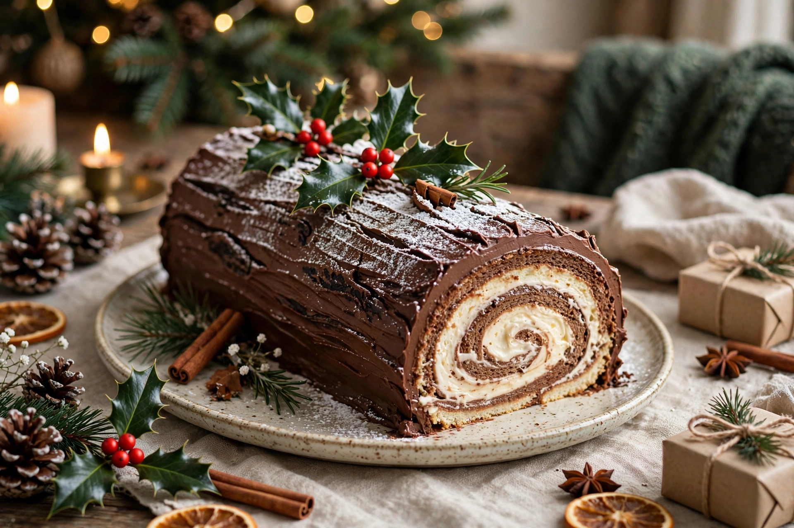

A bûche de Noël (French: [byʃ də nɔɛl], Yule log) is a traditional Christmas cake, especially in France, Belgium, Switzerland and former French colonies, served as a dessert near Christmas. It is made to resemble a miniature Yule log.

The cake refers to the Yule log tradition of burning a large log in the hearth at Christmas. As fireplaces disappeared in the 19th century, the log moved to the table as dessert. Parisian pâtissiers popularised the rolled sponge version in the late 1800s.
A thin Genoise sponge is baked, spread with cream, rolled into a cylinder, chilled and covered with chocolate buttercream or ganache textured with a fork to imitate bark. A diagonal cut end may be placed on top as a branch stump. Decorations include powdered sugar snow, marzipan or meringue mushrooms, holly and fir sprigs.
Fillings range from chestnut, coffee and praline to white chocolate, raspberry and modern frozen or vegan versions. See also Yule log, Christmas cake and Swiss roll.